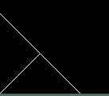
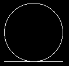
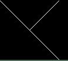
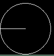
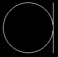
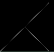
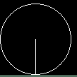
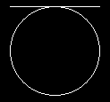
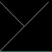
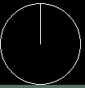

--------------I вариант------------------
- 
- Продублировать картинку из первого задания по всей ширине экрана (ширина экрана примерно 1000).
- На вход подается натуральное число (целое, строго большее нуля). Выясните, сколько в этом числе цифр, равных 0.
--------------II вариант------------------

- Продублировать картинку из первого задания по всей высоте экрана (высота экрана примерно 1000).
- На вход подается натуральное число (целое, строго большее нуля). Выясните, чему равна сумма цифр этого числа.
--------------III вариант------------------
- 
- Продублировать картинку из первого задания по всей ширине экрана (ширина экрана примерно 1000).
- На вход подается натуральное число (целое, строго большее нуля). Выведите, разделяя пробелом, все цифры этого числа, не равные 1.
--------------IV вариант------------------
- 
- Продублировать картинку из первого задания по всей высоте экрана (высота экрана примерно 1000).
- На вход подается натуральное число (целое, строго большее нуля). Выясните, сколько в этом числе цифр, равных 2.
--------------V вариант------------------
- 
- Продублировать картинку из первого задания по всей ширине экрана (ширина экрана примерно 1000).
- На вход подается натуральное число (целое, строго большее нуля). Выясните, чему равно произведение цифр этого числа.
--------------VI вариант------------------
- 
- Продублировать картинку из первого задания по всей высоте экрана (высота экрана примерно 1000).
- На вход подается натуральное число (целое, строго большее нуля). Выведите, разделяя пробелом, все цифры этого числа, не равные 3.
--------------VII вариант------------------
- 
- Продублировать картинку из первого задания по всей ширине экрана (ширина экрана примерно 1000).
- На вход подается натуральное число (целое, строго большее нуля). Выясните, сколько в этом числе цифр, равных 4.
--------------VIII вариант------------------
- 
- Продублировать картинку из первого задания по всей высоте экрана (высота экрана примерно 1000).
- На вход подается натуральное число (целое, строго большее нуля). Выясните четность суммы цифр этого числа. Если сумма четна, выведите EVEN, если нечетна выведите ODD.
--------------IX вариант------------------
- 
- Продублировать картинку из первого задания по всей ширине экрана (ширина экрана примерно 1000).
- На вход подается натуральное число (целое, строго большее нуля). Выведите, разделяя пробелом, все цифры этого числа, не равные 5.
--------------X вариант------------------
- 
- Продублировать картинку из первого задания по всей высоте экрана (высота экрана примерно 1000).
- На вход подается натуральное число (целое, строго большее нуля). Выясните, сколько в этом числе цифр, равных 9.
--------------XI вариант------------------
- 
- Продублировать картинку из первого задания по всей ширине экрана (ширина экрана примерно 1000).
- На вход подается натуральное число (целое, строго большее нуля). Выясните четность произведения цифр этого числа. Если произведение четно, выведите EVEN, если нечетно выведите ODD.
--------------XII вариант------------------

- Продублировать картинку из первого задания по всей высоте экрана (высота экрана примерно 1000).
- На вход подается натуральное число (целое, строго большее нуля). Выведите, разделяя пробелом, все цифры этого числа, не равные 7.